How to study with this atlas: First explain each diagram in your own words. Next cover its labels and redraw it. Finally, check the arrows, categories and examples. All figures are scalable SVGs and remain sharp when zoomed or printed.
1.1
Introduction, aspects, elements and structure
Five building blocks of multimedia
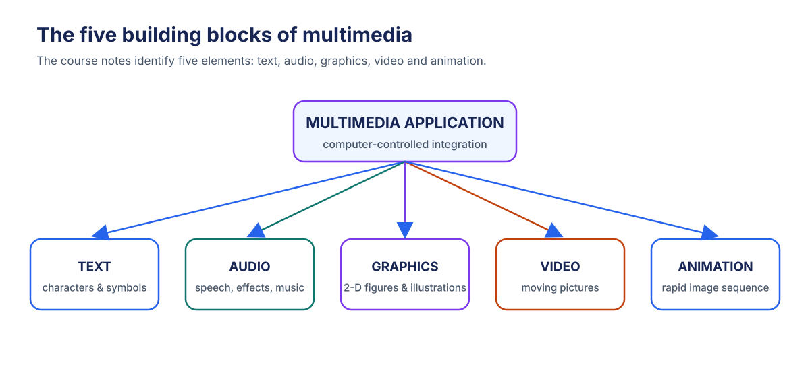
Aspects of multimedia
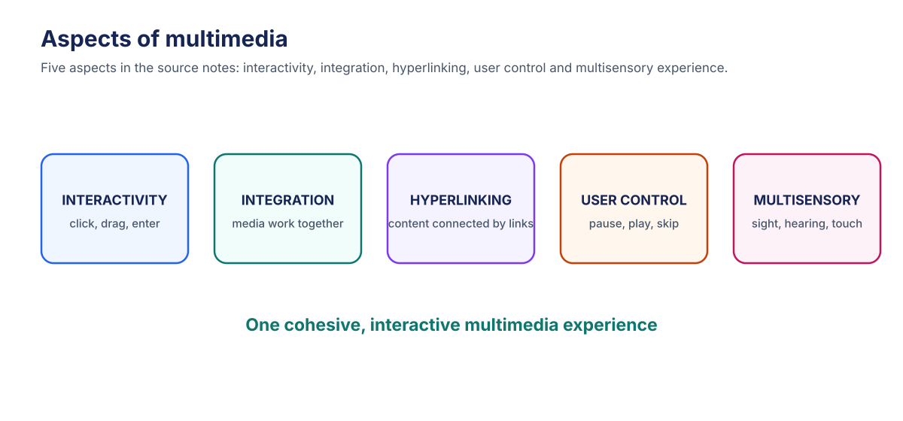
Linear and non-linear multimedia
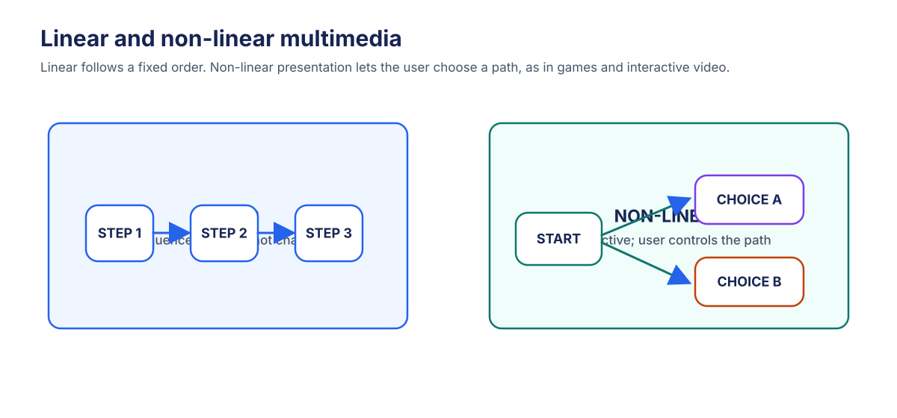
Four characteristics of a multimedia system
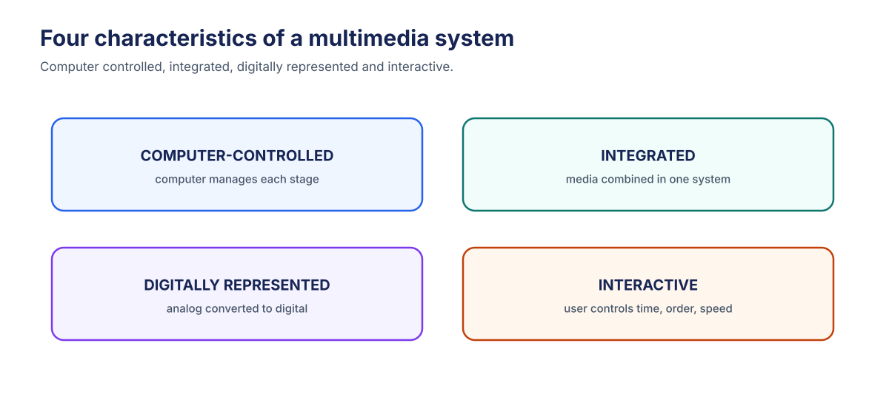
Global structure of multimedia
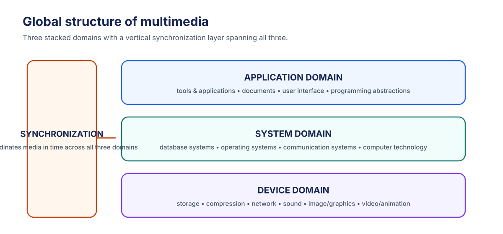
1.2
Medium, properties and representation concepts
Six categories of media
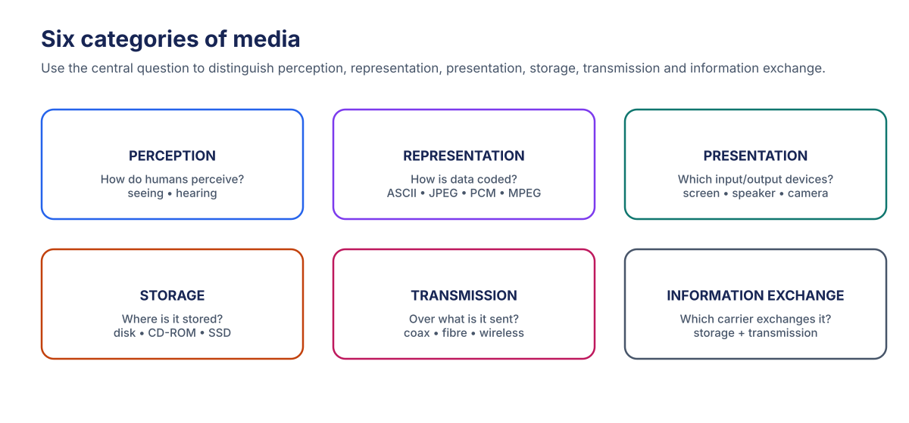
Three media concepts
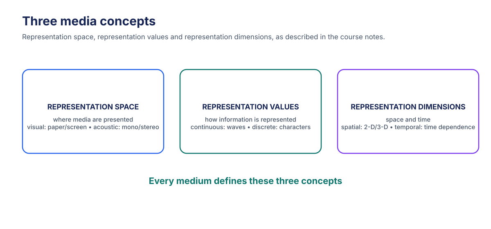
Three system properties
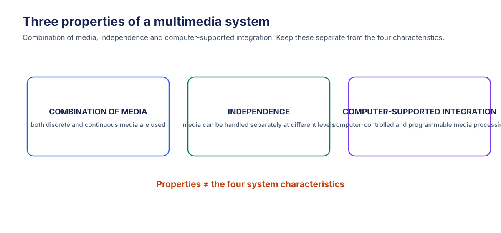
Terminology note: The source notes explain representation space, representation values and representation dimensions. They do not provide a separate formal notation system, so this atlas visualises those documented concepts rather than adding an unsupported notation.
1.3
Data stream characteristics and transmission modes
Discrete versus continuous media
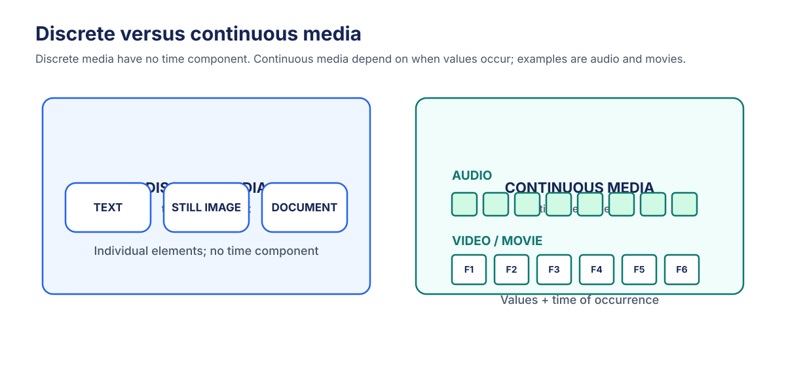
Serial data transmission
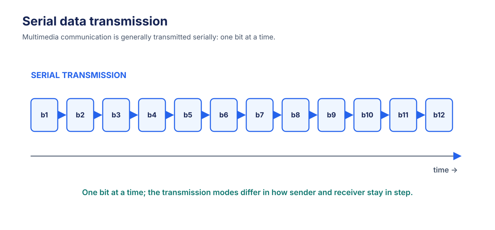
Asynchronous, synchronous and isochronous modes
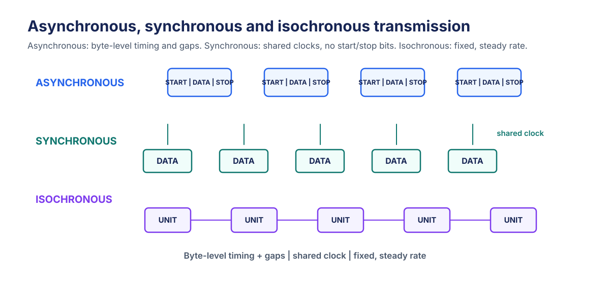
Audio and video as timed streams
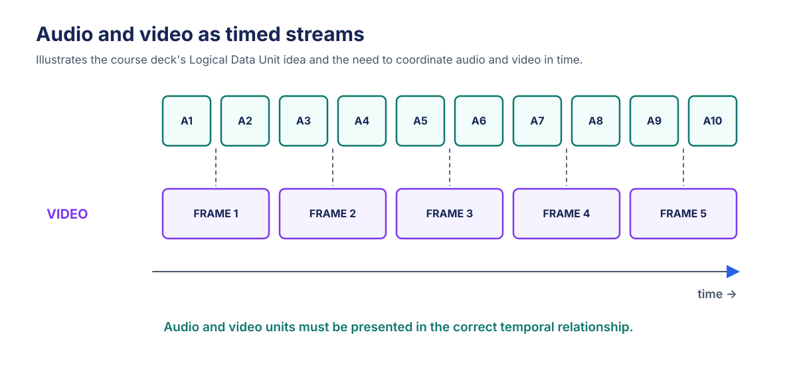
★
Hand-drawn-style quick revision sheet
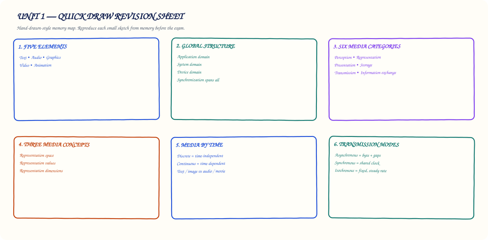